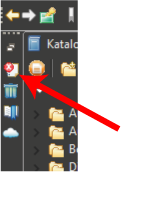

Log view
The Log view
lists errors, warnings and informations that occurred during the
operation of the system.
To open the Log view,
click on the Log view icon ( ) in the Fast view bar (top left in the window border). To minimize it again, click somewhere else.
Alternatively, you may open the Log view with Window>Show Views>Management>Error Log.
) in the Fast view bar (top left in the window border). To minimize it again, click somewhere else.
Alternatively, you may open the Log view with Window>Show Views>Management>Error Log.

To investigate an entry in detail just
double-click that entry.
View actions
- Event Sorting. Events in
the log view can be sorted by Message, Plug-in ID or Date in ascending
or descending order. Simply click on the column header that you want
the sorting to be based on. The down arrow in the column header
indicates descending order; while, the up arrow indicates an ascending
order.
- Event Grouping. Events in
the log view are grouped by default by Session. Simply invoke the function Group By from view's toolbar drop down menu to disable or re-enable grouping.
- Event Filtering. You can
filter the view to show events of a particular type or session. Also,
you can limit the number of entries in the view. Filtering options are
available under Filters... from the view's toolbar drop down menu.
- Export Logs.
When issuing a support request or filing a bug, you may want to attach
the current log file. To export the current log view content into a
file, press the Export Log toolbar button or select Export Log... from the context menu. Then, enter a file name.
- Clear and Delete Logs. To clear the view log content without deleting the underlying
To permanently delete the underlying log file, press the Delete Log toolbar button or select Delete Log from the context menu.
- Control behavior of Log View. If you want the log view to pop-up on new log events, check Activate on new log event in the view's toolbar drop down menu. In this case you should supress Info events (Event Filtering).